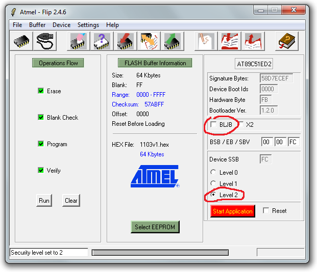
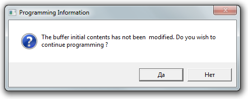

Прошивка ДКР-АТ1103М
- Подключить дозиметр к USB адаптеру (адаптер к USB пока не подключать)
- Замкнуть на контроллере землю (22-й вывод, например) и PSEN (32-й вывод). А лучше зажать кнопку звука
- Подключить адаптер к USB, при этом будет слышен звуковой сигнал. Кнопку можно отпустить
- Запустить Flip
- Выбрать тип контроллера[1]
- нажать[2], выбрать порт, нажать "Connect"
- Выбрать прошивку[3] — 1103v1.hex
- Нажать "Run"
- После окончания прошивки снять флаг BLJB (если стоял) и поставить Level2 
- Если выскочила такая ошибка: 
- ХЗ, что такое, единственно найденное 100% решение — перезагрузить комп и перепрошить, после перезагрузки ошибка больше не появляется